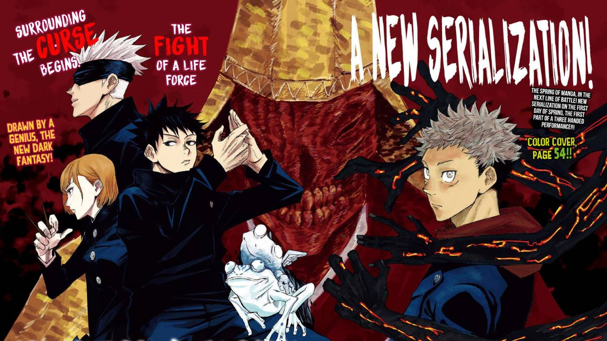

Jujutsu Kaizen
9 / 10
Itadori Yuji, an average high schooler with remarkable physical abilities, unwittingly becomes a host to the Double-Faced Specter when he consumes its finger to save a friend from Curses. Guided by the sorcerer Gojou Satoru, he enrolls at Tokyo Metropolitan Technical High School of Sorcery, joining an organization dedicated to battling Curses. His mission: to exorcise the curse he now shares a body with. Yet, this heroic quest carries a steep price, as Itadori is now a curse himself, forever trapped in a life with no turning back.
Studio : MAPPA
Type : TV Series
Release date : October 3, 2020